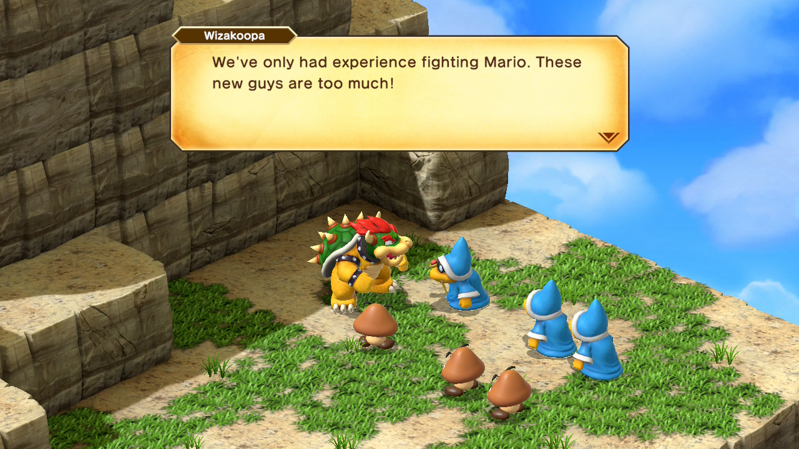
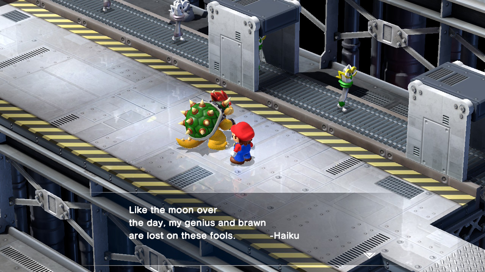
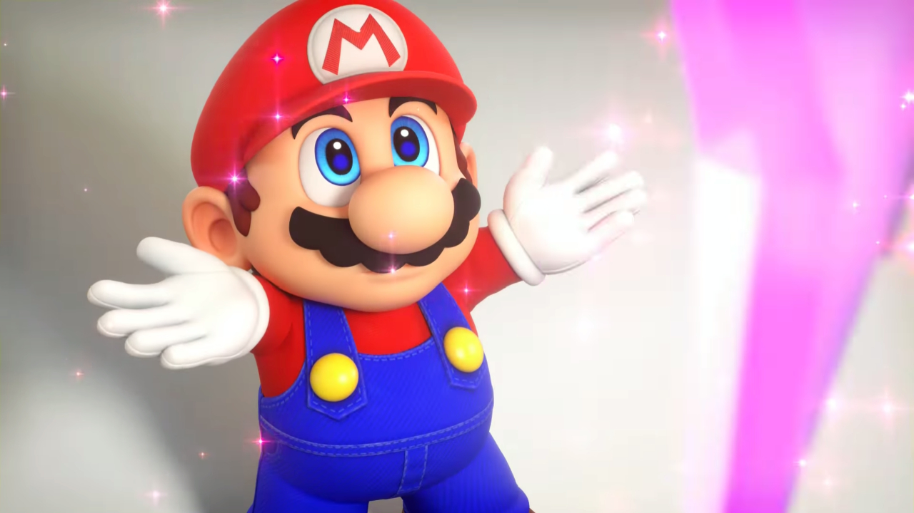
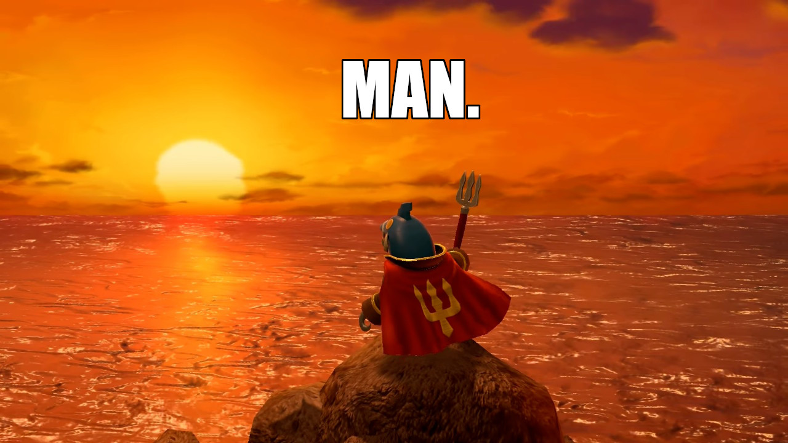

1game1week - Week 44 (10/29/25) - Super Mario RPG (Remake)
Hey all! It's week 44! (10/29 -> 11/5)
I don't have too many news to share today, as my week's been a bit uneventful.
Been deleting most of my social media recently. I think when all is said and done, Facebook and Discord will be the only ones I'll really be on. Facebook mostly because I have some family and friends I can't really contact elsewhere. (and because of Marketplace)
More and more, I've been coming to the realization that I just don't care about social media. It all seems to revolve around influencers and cults of personality crashing down.
X streamer did this, Y YouTuber said that. Who cares?
Am I just old? Disconnected? Maybe. More and more I think mindlessly scrolling through various applications just to read people talking about some weirdo using a shock collar and him responding "nuh uh" is stupid.
Why put so much stock into the thoughts, the views, or the life of people who live in filth? Who claim to have been growing an "exoskeleton" because they didn't shower?
There's also a whole thing about algorithms, and how they're built on making you mad. Infuriating news about politics, recent events are flooded into my feed and it's tiring.
All I wanna do on social media, truly, is see cool art of pretty anime babes but it's simply not worth it. There's just gotta be more than this.
In other news... I won my fantasy football match from last week... cool!
Sorry. A little bit of a downer today. Modern internet where "people" are either grifters or bots isn't fun. It was a lot more fun a decade and a half ago.
Anyways!
New games from 10/22 -> 10/28:
None! (Total 16)
Currently, my backlog is at +8 (lower is better, -1 from last week).
And onto 1g1w. Once again, a game is considered "beaten" if I've accomplished the main objective of the game.
GAME: Super Mario RPG
PLATFORM: Switch (played on Switch 2)
GENRE: RPG
STARTED ON: 10/12
BEATEN ON: 10/24
TOTAL PLAYTIME: 9 hours and 58 minutes
I (somehow) caught a deal from GameStop earlier this year where this game was just $5, brand new. I'm not entirely sure why, but I think this game made up the money in its entertainment value.
It was fun, and I understand why people like it. This game's biggest boon is that its writing is really funny. I really appreciate it being a breath of fresh air for a laugh. I think my favorite bit was Mario being repeatedly asked to jump to prove his identity.

The battle system is really well made. I've never played the original, so I can't speak for changes or QOL improvements from the original to this (I think I read that being able to change your party members on the fly is a change in the remake).
Essentially, it wants you to time a button press for extra damage (often a very large amount of damage so it's very worth it to) based on attack timing which the game prompts you for initially with a "!". Eventually, as you keep successfully hitting those prompts, it removes the "!" prompts for you, expecting you to hit the timing on your own. Timing varies per character / weapon.
This works the other way, too. When your opponents are trying to attack, you're prompted to press a button to either heavily reduce damage dealt to you, or completely block the attack. It's really cool that it's skill / pattern memorization based, combined with the RPG elements. You can be a complete powerhouse, you just have to have good timing.

One thing that I thought was great about the game was the high-quality cutscenes with 3D models. Some of them look great, but the most charming part is that they use the same models as the actual game. As such, the characters look really stubby and cute.
I mean, think about it. If you had Mario with the same proportions as 3D Mario in the cutscenes, that's completely understandable and would probably look okay. Having stubby Mario (non-Super Mario, if you will) somehow added a layer of whimsy. Joy, even. Just a little guy going around and doing stuff.
Specifically, when receiving one of the Star Pieces, when he puts his arms up to take it. He looks so dumb it's cute. He looks just as if he was asking for uppies.

Strangely I think one of the lower-ish points for this game was its... minigames? Is that an apt description?
During some sections of the game, you're put in a sort of minigame relevant to what the current situation is. For example, when exiting an underwater area, you go down a river stream and are told to just grab coins for a while. Either that, or rolling logs and pressing A to jump sometimes. Or automatically chasing a guy and pressing A to jump sometimes, while changing between three lanes sometimes.
They just felt tacky and a little bit uninspired. I'll be fair, these were built with the SNES controller in mind, not with something like motion controls, HD rumble, etc. I'd just think they could afford to be a little more, especially since this is a remake.
A very common problem that I find remakes run into is that they're very afraid to change anything from the original game. This is fine... if your game is already perfect. Unfortunately this is not an ASTLIBRA remake, so they can't claim that one.
In short, I really enjoyed Super Mario RPG. I'm glad I got it at such a steal of a price (for some reason). Its writing is hilarious, its battle system is fun and actively seeks you to be engaged with it, the 3D cutscenes are really well made and having the goofy models made it really charming.
Great game whose only sin is not aspiring to be a categorically better game than its source material.

Thanks for reading! If you need to contact me for any reason, please feel free to email me at aru@hoshikawa-aru.com.